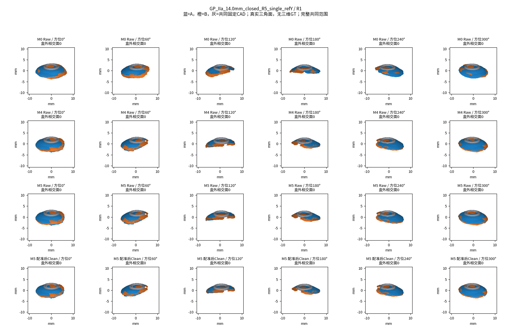
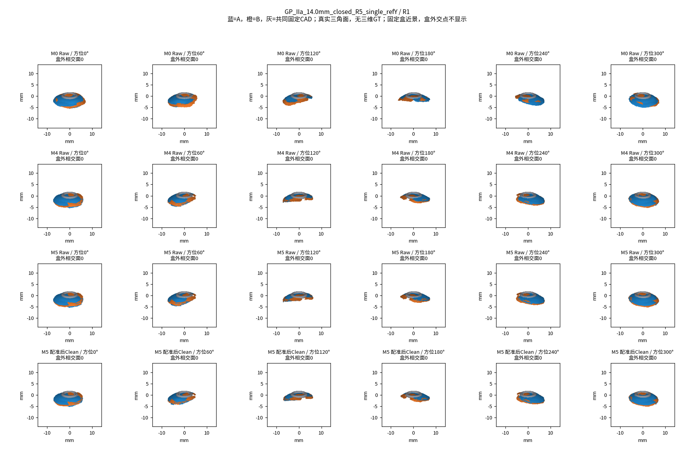
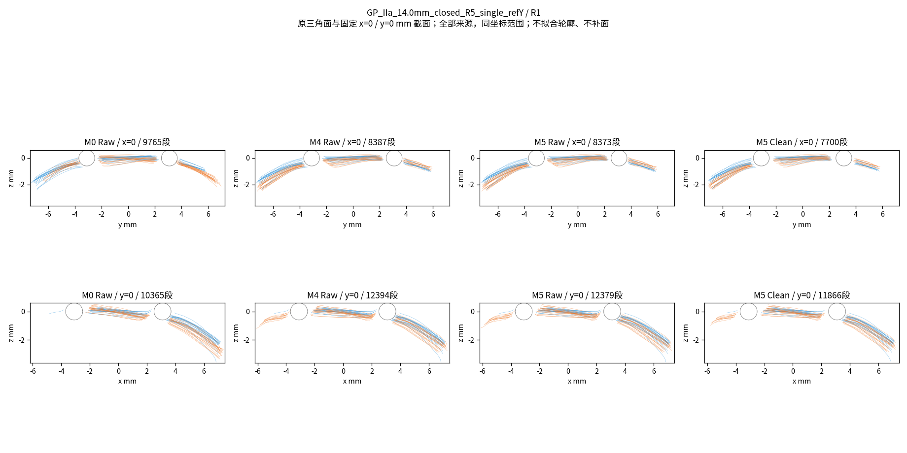
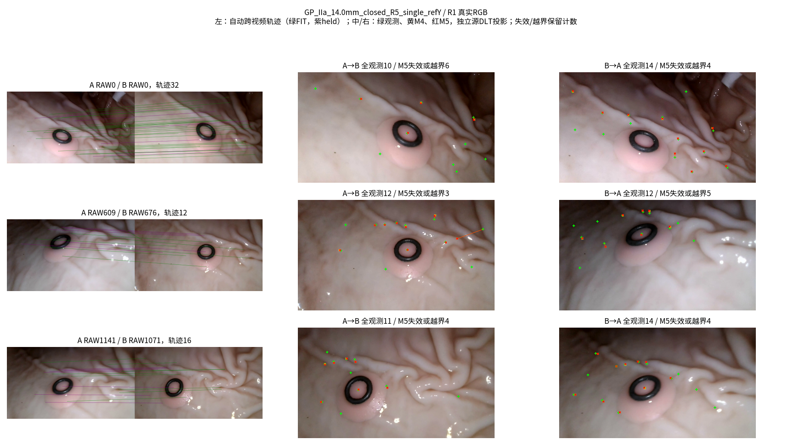
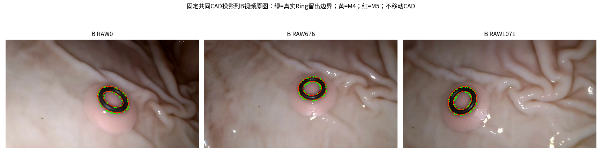
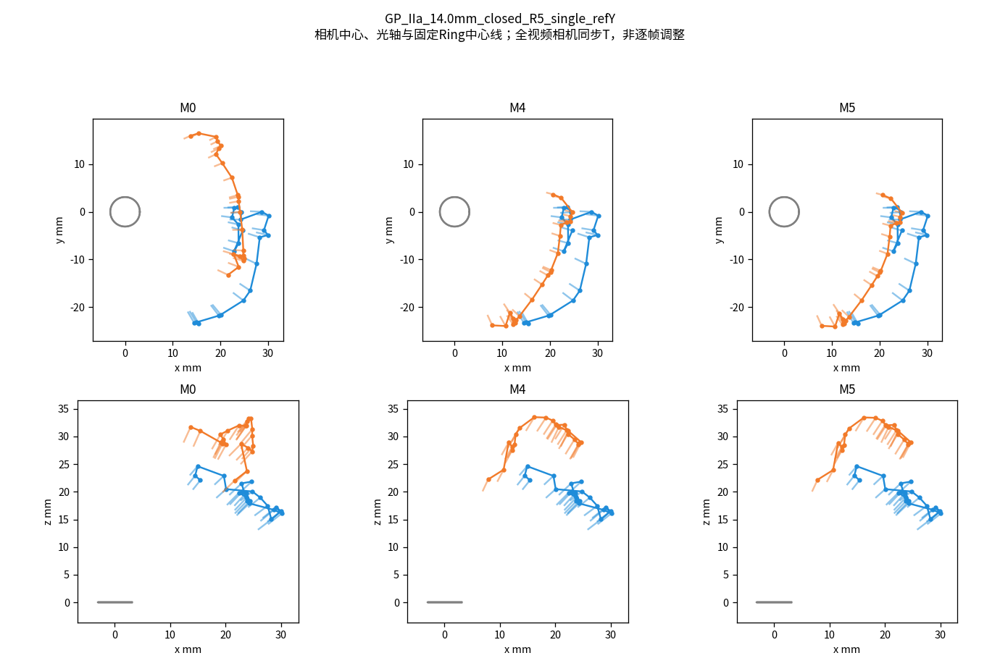
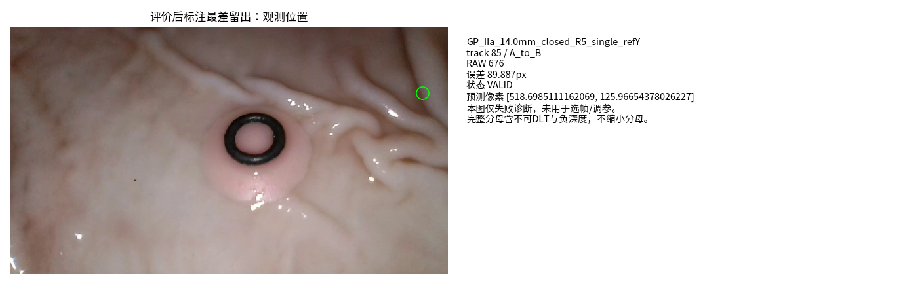
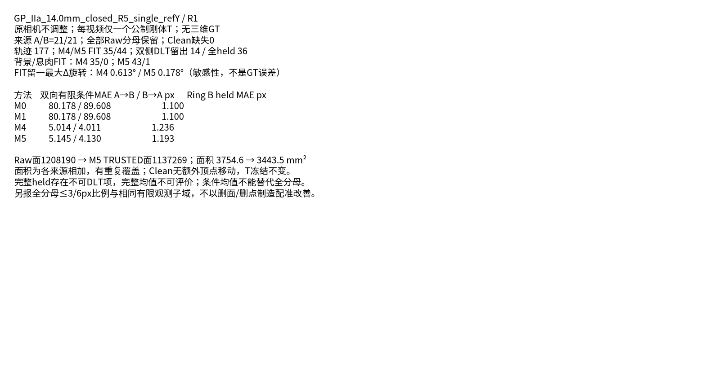
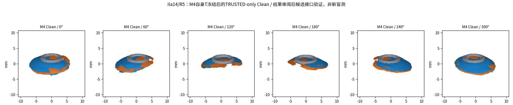

A=GP_IIa_14.0mm_closed_R5_single_refY_004；B=GP_IIa_14.0mm_closed_R5_single_refY_005
来源42；Clean缺失0；轨迹177；M4 FIT 35；M5 FIT 44；全held 36。真实图，无独立三维GT。优化收敛不是质量批准。








不是新的盲测或主体更新批准；M4标签不能与M5互换。
